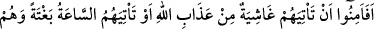
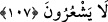

derlerdi: “Lebbeyke lâ şerîke lek, illâ şerîke hüve lek, temlikühû vemâ melek. Buyur
Allahım! Senin hiçbir ortağın yok! Ancak bir takım ortakların var ki, hem onların hem
de sahip oldukları şeylerin sahibi Sensin!”
Mekkeliler “Bizim yegâne Rabbimiz Allah’tır. Melekler de O’nun kızlarıdır,” derken
O’nu tek kabul etmiş olmuyor, aksine şirk koşmuş oluyorlardı. Putperestler: “Bizim
yegâne Rabbimiz Allah’tır, putlar ise ibâdet edilmeye istihkak hususunda O’nun
ortaklarıdır.” diyorlardı.
Yahûdiler: “Yegâne Rabbimiz Allah’tır, Uzeyr de O’nun oğludur.” derken
Hristiyanlar: “Yegâne Rabbimiz Allah’tır, Îsâ da O’nun oğludur.” diyorlardı.
et-Te’vîlât’ta şöyle denilir: “Onların” yani halkın “çoğu Allah’a” ve O’nu talep
etmeye “ancak şirk koşarak” îman ve taleb fiillerinin Allah’tan değil, kendilerinden
olduğunu zannederek “iman ederler.” Çünkü sebepleri göz önünde bulunduranlar,
müşrik sayılırlar. Sadece müsebbibi göz önünde bulunduranlar muvahhiddirler.
Muhavvidlerin nazarında ise Allah’ın zâtından başka her şey helâk olup gidecektir.”
Vâsıtî Nisabur’a vardığında Şeyh Ebû Osman Mağribî’nin müridlerine: “Şeyhiniz
size neyi emrediyor?” diye sordu.
Onlar da: “Şeyhimiz bize tâatten hiç ayrılmamayı, bununla birlikte yine de tâati tam
yapamadığımızı bilmeyi emrediyor” dediler. Bunun üzerine Vâsıtî şöyle dedi:
“Şeyhiniz size kesinlikle mecûsîliği emretmiş. Keşke bütün bu tâatlerin gerçek menşei
ve gerçek çıkış yerini görerek, yaptığınız tâatleri görmezlikten gelmeyi emretmiş
olsaydı!”
107. Onlar Allah tarafından kuşatıcı bir felâket gelmesi veya farkında olmadan
kıyametin ansızın kopması karşısında kendilerini emîn mi gördüler?
“Onlar” yani müşrikler “Allah tarafından kuşatıcı bir felâket gelmesi veya”
geleceğinin “farkında olmadan” hazırlıkları yokken “kıyametin ansızın” yani ortada
hiçbir belirti yokken “kopması karşısında kendilerini emîn mi gördüler?”
Eğer “ansızın” lâfzı, “farkında olmadan” ifadesinin verdiği mânâyı verdiğine göre
ona gerek yoktur, denirse şöyle cevap verilebilir: Buna gerek olmadığı söylenemez.
Çünkü “farkında olmadan” ifadesi, ‘dünyalık işlerle uğraşmaktan dolayı gâfillerken’
mânâsınadır. Tıpkı “birbirleriyle çekişirlerken onları yakalayıverir.” (Yâsin, 36/49)
âyetinde olduğu gibi.
Bir hadiste şöyle buyrulmuştur: “Âni ölüm, öfkeli bir yakalamadır.”[97] Yâni ansızın
ölüvermek Allah’ın o kula gazabının bir eseri olarak ortaya çıkar. Hadisteki “âni”den